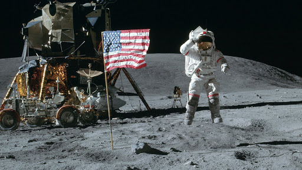
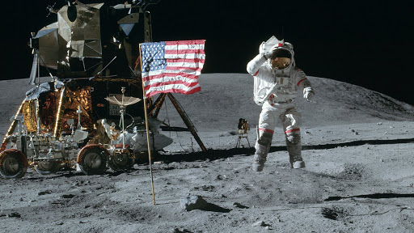

21 июля 1969 года - Нил Армстронг стал первым человеком, ступившим на Луну. Полет был произведен на американском космическом корабле Аполлон-11. Командир Нил Армстронг и пилот лунного модуля Базз Олдрин сформировали американскую команду, которая приземлилась на Лунном модуле Аполлона «Орел» 20 июля 1969 года в 20:17 UTC. Армстронг стал первым человеком, который ступил на поверхность Луны через 6 часов и 39 минут 21 июля в 02:56 UTC; Алдрин присоединился к нему через 19 минут. Они провели около двух с половиной часов вместе вне космического корабля, собрали 47,5 фунтов (21,5 кг) лунного материала и вернулись на Землю.
 
